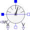
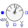

MultiSensorSensor to measure current, voltage and power |

|
Information
This information is part of the Modelica Standard Library maintained by the Modelica Association.
This multi sensor measures current, voltage and instantaneous electrical power of a single-phase system and has a separated voltage and current path. The pins of the voltage path are pv and nv, the pins of the current path are pc and nc. The internal resistance of the current path is zero, the internal resistance of the voltage path is infinite.
Connectors (7)
| pc |
Type: PositivePin Description: Positive pin, current path |
|
|---|---|---|
| nc |
Type: NegativePin Description: Negative pin, current path |
|
| pv |
Type: PositivePin Description: Positive pin, voltage path |
|
| nv |
Type: NegativePin Description: Negative pin, voltage path |
|
| i |
Type: RealOutput Description: Current as output signal |
|
| v |
Type: RealOutput Description: Voltage as output signal |
|
| power |
Type: RealOutput Description: Instantaneous power as output signal |
Used in Examples (4)
|
Modelica.Electrical.Batteries.Examples Charge a cell with constant current - constant voltage characteristic |
|
|
Modelica.Electrical.Batteries.Examples Charge a transient cell with constant current - constant voltage characteristic |
|
|
Modelica.Electrical.Batteries.Examples Charge a stack with constant current - constant voltage characteristic |
|
|
Modelica.Electrical.Batteries.Examples Charge a transient stack with constant current - constant voltage characteristic |
Used in Components (4)
|
Modelica.Electrical.Batteries.BaseClasses Partial cell with sensors |
|
|
Modelica.Electrical.Batteries.BaseClasses Partial stack with sensors |
|
|  |
Modelica.Electrical.Polyphase.Examples.Utilities Analyze DC voltage, current and power |
|
Modelica.Electrical.PowerConverters.Examples.ACAC.ExampleTemplates Dimmer including control |